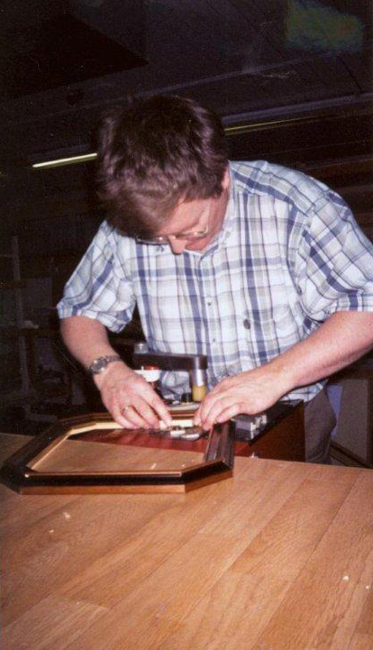
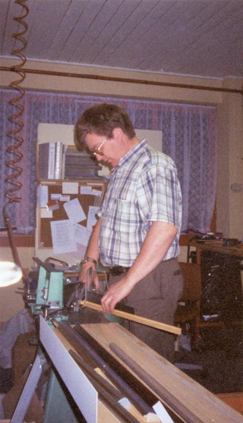

Om Gangsø Rammer
Firmaet ble etablert i 1967, av min far Peter Gangsø. Vi har alltid holdt til i Sandefjord, en tid også i Tønsberg.
Inntil 2007 bestod Gangsø Rammer av både forretning og rammeverksted.
Forretningsdelen ble solgt i 2007, men jeg beholdt rammeverkstedet.
Siden da har jeg , Arild Gangsø, drevet dette rammeverkstedet.
Jeg har vært ansatt hos Gangsø Rammer siden 1977 og ble mester i faget i 1991. Gangsø Rammer er èn av få bedrifter som er mester i glassfaget med innramming som spesialområde.

